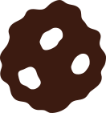
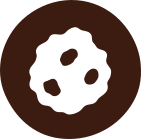

MENSEN
Eerlijke arbeidsvoorwaarden, veiligheid, goede werktijden en ruimte om jezelf te ontwikkelen.
ONZE VERANTWOORDELIJKHEID
Een duurzame onderneming kijkt verder dan alleen het product. Daarom kijken we bij De Oliebollenfabriek naar mensen, milieu, eerlijke handel en onze omgeving.

0401
Duurzaamheid betekent dat we rekening houden met de gevolgen van onze keuzes voor de toekomst. Het gaat niet alleen over het milieu, maar ook over de mensen die betrokken zijn bij een bedrijf en over de maatschappij waarin een bedrijf actief is.
Voor De Oliebollenfabriek betekent duurzaam ondernemen dat we bewust kijken naar de hele keten: van de ingrediënten die we inkopen tot de mensen die bij ons werken en de manier waarop we omgaan met onze omgeving.
We proberen daarom niet één probleem op te lossen, maar verschillende onderdelen van ons bedrijf stap voor stap beter en verantwoordelijker te maken.
02 — ONZE VIER PILAREN
Voor ons bestaat duurzaam ondernemen uit vier onderdelen die met elkaar verbonden zijn.
Eerlijke arbeidsvoorwaarden, veiligheid, goede werktijden en ruimte om jezelf te ontwikkelen.
Bewust omgaan met energie, water, grondstoffen, afval, bakolie en voedselverspilling.
Aandacht voor de herkomst van onze grondstoffen en de omstandigheden waarin deze worden geproduceerd.
We willen onderdeel zijn van onze omgeving en bijdragen aan lokale en maatschappelijke initiatieven.
03
Een duurzaam bedrijf zorgt niet alleen goed voor zijn producten, maar ook voor de mensen die het bedrijf draaiende houden.
Medewerkers krijgen een eerlijk loon dat past bij hun werkzaamheden, ervaring en verantwoordelijkheden.
We zorgen voor duidelijke werktijden en voldoende pauzes. Tijdens drukke periodes proberen we de werkdruk zo goed mogelijk te verdelen.
In een productieomgeving met hete olie en machines is veiligheid belangrijk. Medewerkers krijgen duidelijke instructies en werken met veilige apparatuur.
Medewerkers krijgen de mogelijkheid om nieuwe vaardigheden te leren en zich verder te ontwikkelen binnen het bedrijf.
04
Een product kan moeilijk duurzaam genoemd worden wanneer we alleen naar het eindproduct kijken. Daarom letten we ook op de mensen en bedrijven achter onze grondstoffen.
Bij het inkopen kijken we naar de herkomst van ingrediënten, de manier waarop ze geproduceerd worden en de omstandigheden waaronder mensen werken.
Waar mogelijk zoeken we naar leveranciers die transparant zijn over hun productieketen en verantwoord omgaan met mens en milieu.
05
Een groot deel van onze duurzaamheidsaanpak gaat over de manier waarop we omgaan met grondstoffen en energie.
We proberen machines, verlichting en andere apparatuur zo efficiënt mogelijk te gebruiken en onnodig energieverbruik te voorkomen.
We letten op de kwaliteit van onze bakolie, zodat bruikbare olie niet onnodig wordt vervangen. Gebruikte olie wordt apart ingezameld.
Papier, karton, verpakkingen en andere afvalstromen worden waar mogelijk gescheiden zodat materialen opnieuw verwerkt kunnen worden.
Water is nodig voor schoonmaak en productie. Daarom proberen we efficiënt schoon te maken en verspilling van water te beperken.
Door de productie beter af te stemmen op de vraag proberen we te voorkomen dat er meer oliebollen worden gemaakt dan nodig is.
Een verpakking moet het product beschermen, maar hoeft niet groter of uitgebreider te zijn dan nodig.
VAN GRONDSTOF TOT PRODUCT
06
Als bedrijf maken we deel uit van een omgeving. Daarom willen we niet alleen kijken naar wat er binnen onze eigen muren gebeurt.
We willen waar mogelijk samenwerken met lokale ondernemers, verenigingen, scholen en andere organisaties.
Waar mogelijk werken we samen met lokale leveranciers en ondernemers.
We willen bijdragen aan projecten en initiatieven die iets betekenen voor de lokale gemeenschap.
Waar mogelijk ondersteunen we lokale verenigingen, evenementen of andere maatschappelijke initiatieven.
Wanneer voedsel aan het einde van de dag niet verkocht is maar nog geschikt is voor consumptie, kijken we naar mogelijkheden om dit te doneren.
07 — ONZE DOELEN
Eerlijke arbeidsvoorwaarden, veilige werkplekken en mogelijkheden voor ontwikkeling.
Minder energie-, water- en grondstoffenverspilling en verantwoord omgaan met afval.
Bewuster inkopen en aandacht houden voor de herkomst van onze grondstoffen.
Bijdragen aan onze omgeving door lokale samenwerking en maatschappelijke projecten.
Productie beter afstemmen op de vraag en voedsel zo goed mogelijk benutten.
Blijven zoeken naar nieuwe manieren om onze bedrijfsvoering verantwoordelijker en duurzamer te maken.
08 — DE TOEKOMST
Duurzaamheid is geen eindpunt. Nieuwe technieken, betere machines en nieuwe inzichten kunnen ervoor zorgen dat we onze bedrijfsvoering steeds verder verbeteren.
Daarom willen we niet doen alsof een bedrijf van de ene op de andere dag volledig duurzaam kan zijn. Het gaat om keuzes maken, resultaten bekijken en blijven verbeteren.

DE OLIEBOLLENFABRIEK
Een goede oliebol begint met goede keuzes. Voor mensen, voor het milieu, voor onze leveranciers en voor de omgeving waarin we werken.
BEKIJK ONZE OLIEBOLLEN →